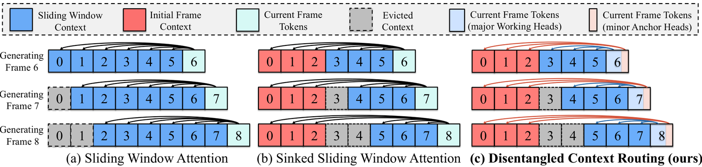

Picture an animation team that pins the character sheet on every desk. The model artists stay on design, but the in-betweeners start copying the sheet's pose, and the scene stops moving. Disen-Forcing gives the sheet only to the few who check the design, and lets the rest watch the last few frames.
애니메이션 팀이 모든 책상에 캐릭터 설정화를 붙여 둔다고 해 보자. 디자인 담당은 설정을 잘 지키지만, 중간 동작을 그리는 사람들도 설정화의 자세를 따라 그리기 시작해서 장면이 멈춘다. Disen-Forcing은 설정화를 디자인을 확인하는 몇 사람에게만 주고, 나머지는 직전 몇 프레임만 보게 한다.
How it works: route context by head type작동 방식은 헤드 종류별로 문맥 나누기
A frame sink shows the first frames to every head. Disen-Forcing gives anchor heads the first frames and working heads the recent window, with the same cache budget.
프레임 싱크는 모든 헤드에게 첫 프레임을 보여 준다. Disen-Forcing은 같은 캐시 예산에서 앵커 헤드에게는 첫 프레임을, 작업 헤드에게는 최근 창을 준다.

- Find anchor heads once.앵커 헤드 찾기.Average each head's attention to the first frame over 1,003 prompts and keep the top 20%. The set barely changes across prompts, timesteps and training stages.프롬프트 1,003개에 걸쳐 헤드마다 첫 프레임 어텐션을 평균 내고 상위 20%를 고른다. 이 집합은 프롬프트, 시간 단계, 학습 단계가 바뀌어도 거의 그대로다.
- Route the cache.캐시 라우팅.Anchor heads read the first frames plus the current chunk. Working heads read the sliding window plus the current chunk.앵커 헤드는 첫 프레임과 현재 청크를 읽는다. 작업 헤드는 슬라이딩 창과 현재 청크를 읽는다.
- Keep motion independent.움직임 독립 유지.Run a second pass with anchor heads cut off from the first frames, and penalize any change in the frame-to-frame attention map of layer 26.앵커 헤드가 첫 프레임을 못 보게 한 두 번째 패스를 돌리고, 26층의 프레임 간 어텐션 지도가 달라지면 벌점을 준다.
Key point: motion comes back핵심은 움직임이 돌아온다는 것
On both base models, the frame sink kills motion over a minute of video. Routing restores it.
두 기반 모델 모두에서 프레임 싱크는 1분짜리 영상의 움직임을 죽인다. 라우팅이 이를 되살린다.
Results: a better balance, not a free lunch결과는 공짜가 아닌 더 나은 균형
Drift drops far below the base models, though the sink alone still drifts a little less and scores slightly higher on subject consistency.
표류는 기반 모델보다 훨씬 줄지만, 싱크만 쓴 경우가 표류는 조금 더 적고 피사체 일관성도 약간 높다.
| Model | Total ↑ | Dynamic ↑ | Subject ↑ | Drift ↓ |
|---|---|---|---|---|
| Deep-Forcing | 79.35 | 58.90 | 96.30 | 5.04 |
| Self-Forcing | 74.75 | 34.70 | 96.82 | 12.73 |
| + Frame Sink | 76.88 | 35.83 | 97.79 | 3.10 |
| + Disen-Forcing | 82.34 | 73.95 | 96.39 | 4.04 |
| Causal-Forcing | 77.71 | 64.91 | 95.35 | 12.96 |
| + Frame Sink | 73.68 | 16.06 | 98.01 | 3.66 |
| + Disen-Forcing | 81.26 | 69.64 | 95.76 | 5.10 |
Before copying an LLM trick into video, check which heads actually use it. Here the "sink" was a job for a few heads, and giving it to all of them taught the student that standing still scores well.LLM 기법을 비디오로 옮기기 전에, 실제로 어느 헤드가 그것을 쓰는지 확인하자. 여기서 "싱크"는 몇몇 헤드의 일이었고, 이를 모든 헤드에 주자 학생 모델은 가만히 있는 편이 점수가 잘 나온다고 배웠다.
Tested only on 1.3B Wan2.1 students at 832×480. Consistency and drift metrics favor static clips, so part of the case rests on a learned VideoScore judge, and the regularizer needs an extra forward pass.시험은 832×480의 1.3B Wan2.1 학생 모델에서만 했다. 일관성과 표류 지표는 정적인 영상에 유리해서, 근거 일부는 학습된 VideoScore 판정기에 기댄다. 정규화 항은 순전파를 한 번 더 요구한다.